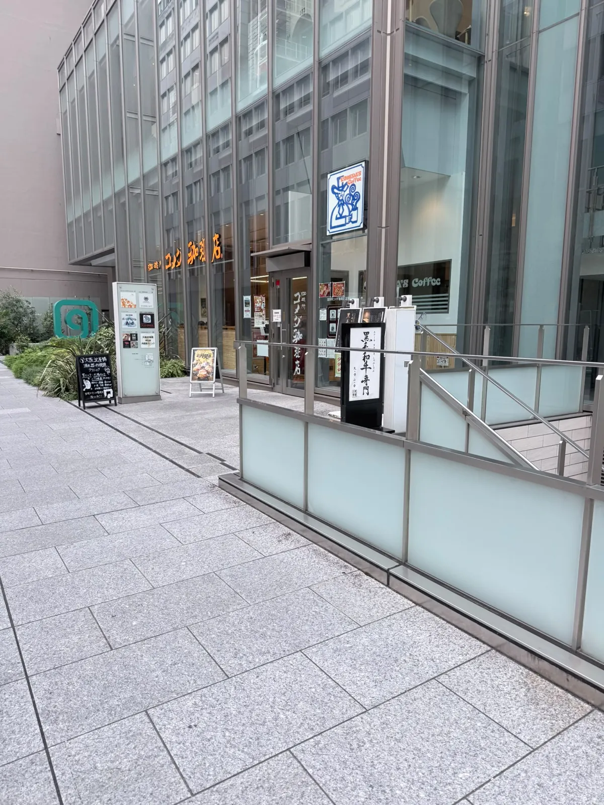
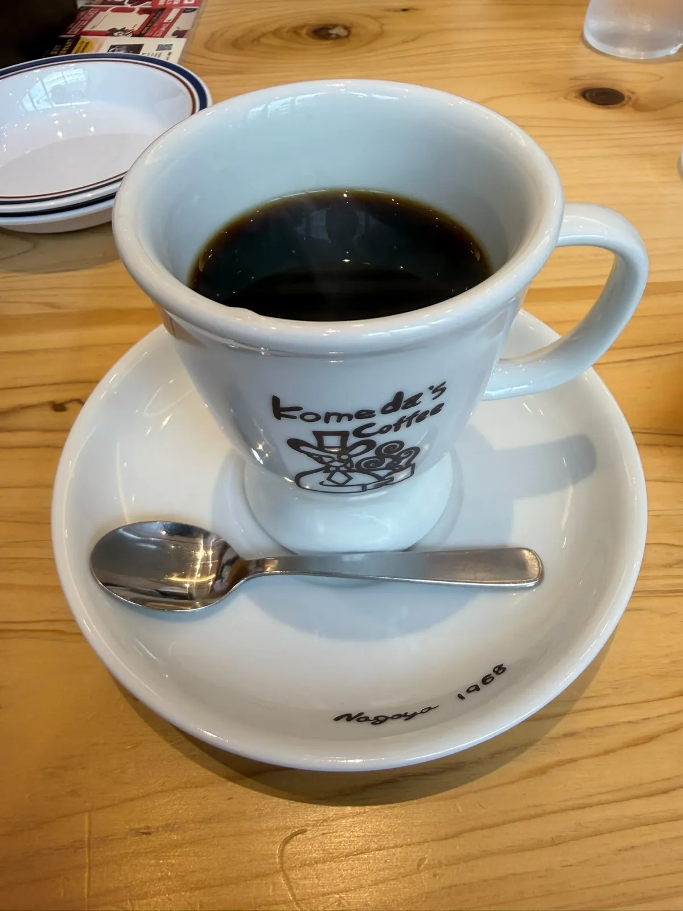
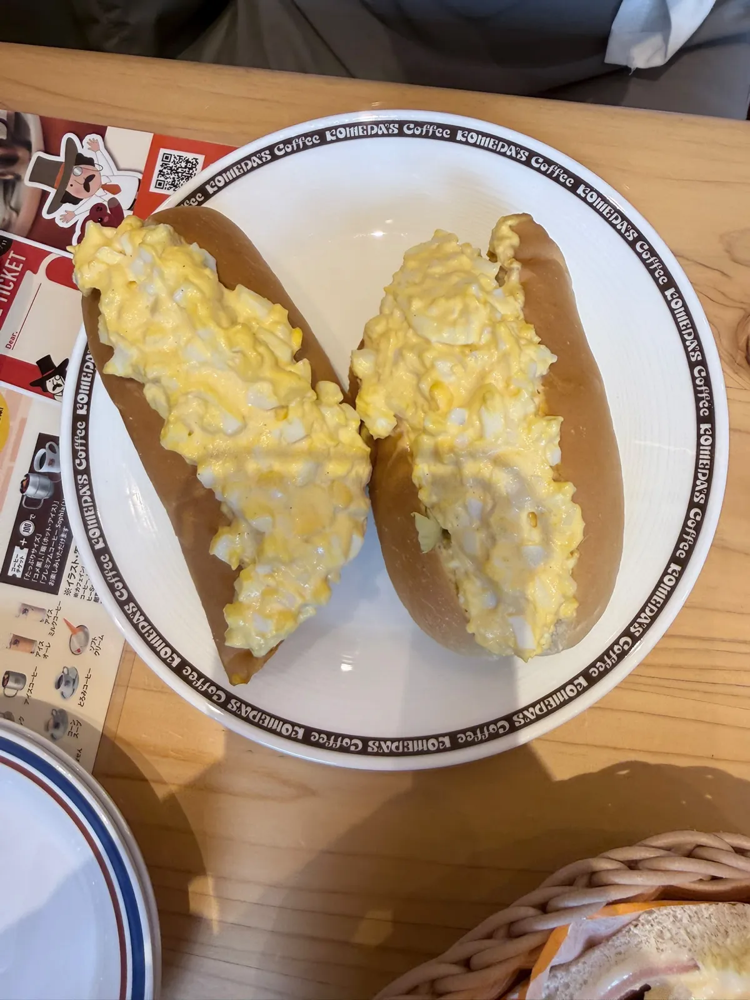
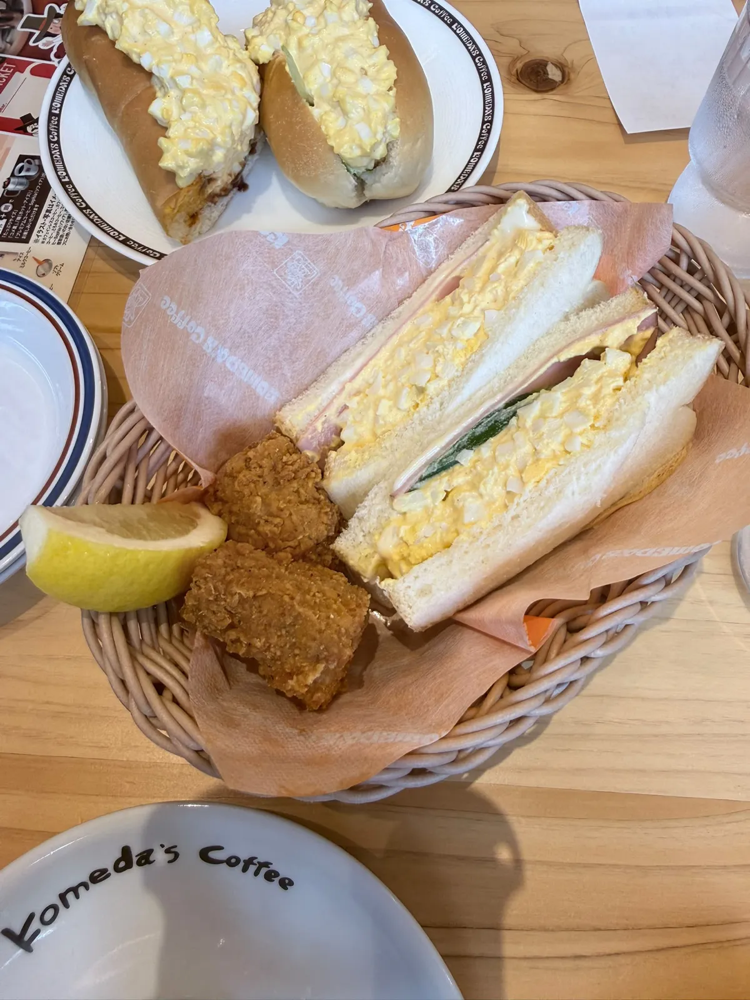

コメダ珈琲店（淀屋橋南店）：一頓早餐，本次冇記低單價
大阪淀屋橋一頓早餐。2026-09 到訪，點咗招牌黑咖啡、手工雞蛋熱狗同一個迷你米漢堡套餐。一句總結：一頓好寫意嘅早餐 —— 每次嚟大阪都會食佢哋嘅早餐。要預先講明嘅一樣嘢：本次冇記低單價，所以呢篇係本分區唯一一篇冇價錢拆解嘅紀錄。
食咗咩
當日紀錄
到訪日期：
點咗咩：
價錢：
營業時間：
地址：
餐牌、人流同營業時間呢啲嘢會變，所以佢哋抽咗出嚟獨立標明核實月份 —— 實食紀錄呢個分區嘅硬規則之一。正文只留唔會變嗰部分。
一入店

一入店，店員即刻送上熱毛巾同冰水。
黑咖啡

黑咖啡口感醇厚順滑，香氣四溢。味道濃郁深邃，好有復古韻味。
呢篇係實食紀錄，唔係器材文，所以唔講呢杯點沖。
雞蛋熱狗同套餐

熱狗嘅麵包又軟又綿，配滿滿一口濃郁滑嫩嘅雞蛋。

迷你米漢堡套餐入面嘅三明治同炸雞都唔錯，炸雞外酥內嫩。
點解呢篇冇價錢拆解
本次冇記低單價，亦冇記低埋單金額。本分區其他紀錄都有一段價錢拆解，呢篇冇 —— 冇數就冇數，本站唔會由其他分店、其他網站或者印象砌返一個價出嚟。
下面平台數據入面有個人均 ¥33，但佢唔係本次付咗幾多：人均係所有用戶嘅滾動平均，同一個人一次早餐點咗咩冇關係。將佢寫成本次埋單，就係用一個量緊另一樣嘢嘅數填空。
值唔值得專登去
平台數據（大眾點評，2026-09-23 截取，唔係本站評分）
評分：
平台分類：
本站判斷
判斷：
總結：一頓好寫意嘅早餐。每次嚟大阪都會食佢哋嘅早餐。
平台分類嘅地區寫「心斎橋／道頓堀」，但平台地址係高麗橋、店名係淀屋橋南店 —— 兩樣都照平台原文記，出發前以地址為準。
同一次大阪行程嘅另一篇：元祿壽司（心斎橋店），兩個人 3103 日圓，五項加埋一個日圓都唔差。
本分區其餘嘅實食紀錄一樣係咁寫：一次到訪、一個日期、一組會過期嘅數 —— 呢篇係唯一一篇冇價錢嗰組。
常見問題
呢頓早餐幾多錢？
本次冇記低單價，亦冇記低埋單金額，所以本站答唔到。平台人均 ¥33 係所有用戶嘅滾動平均，唔係本次埋單，唔好當佢係本次價錢。
點咗咩？
Komeda 招牌黑咖啡、手工雞蛋熱狗，同一個迷你米漢堡套餐（入面有三明治同炸雞）。
幾點開門？
平台資料寫 6:30–22:30，所以早餐時段已經開咗。呢個係大眾點評 2026-09-23 嘅資料，唔係商戶公布，出發前建議自行確認。